A/T - Stall Test Procedure
GROUPAUTOMATIC TRANSMISSION
DATE
APRIL 2013
NUMBER
13-AT-007
MODEL
ALL
SUBJECT:
AUTOMATIC TRANSMISSION STALL TEST PROCEDURE
This TSB supersedes TSB 12-AT-005 to add 2013 models
Description:
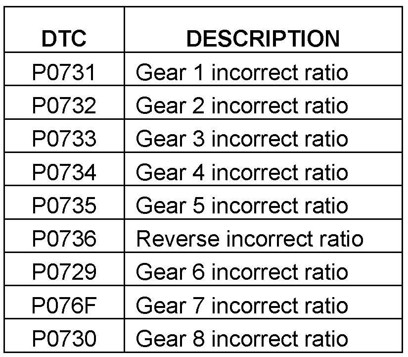
To diagnose a transaxle for "slipping" or the shown Diagnostic Trouble Codes, follow the Service Procedure shown.
^ If the vehicle does not pass the stall test, replace the transmission.
^ If the vehicle passes the stall test:
> First dealer visit: Delete any DTC and return the vehicle to the customer for evaluation.
> Second dealer visit for same DTC: Replace the transmission.
Applicable Vehicles:
ALL
WARRANTY INFORMATION:
Normal warranty applies
SERVICE PROCEDURE - Stall Test Procedure without A/T Tester:
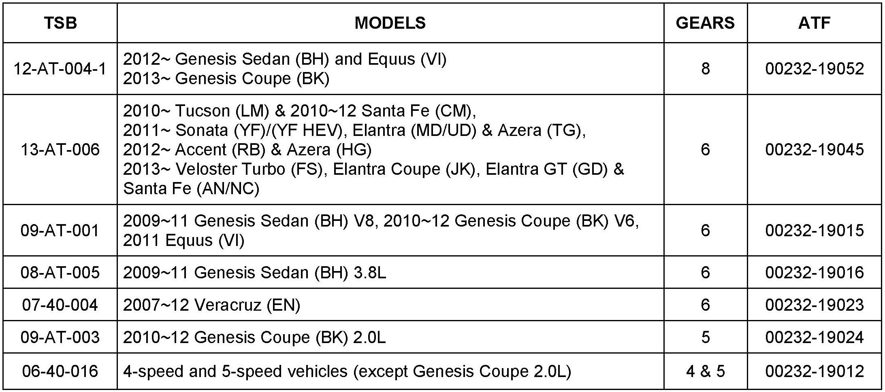
1. Check the automatic transaxle fluid level according to the TSB listed. Add A/F, if necessary, to bring the level within the "HOT range.
2. Apply the parking brake and place blocks in front of and behind both front wheels.
CAUTION
Do not let anybody stand in front of or behind the vehicle.
3. Start the engine and move the shift lever to "R".
4. Press and hold the brake pedal, then fully depress the accelerator and record the engine speed.
CAUTION
Do not hold the throttle fully open for more than 3 seconds. Release the throttle and allow the engine to idle in "N" for 15 seconds.
5. Confirm the stall speed is within the specifications shown in the related shop manual (approximately 2000~2900 rpm at sea level, depending on model). If the stall speed is higher than specification or the engine revs to the redline, one or more clutches may be slipping.
6. Move the shift lever to "D", and then repeat Steps 4~5. Go to Step 7.
7. Move the shift lever to the "Sport Mode position (if installed) and repeat Steps 4~5 in "Gear 1".
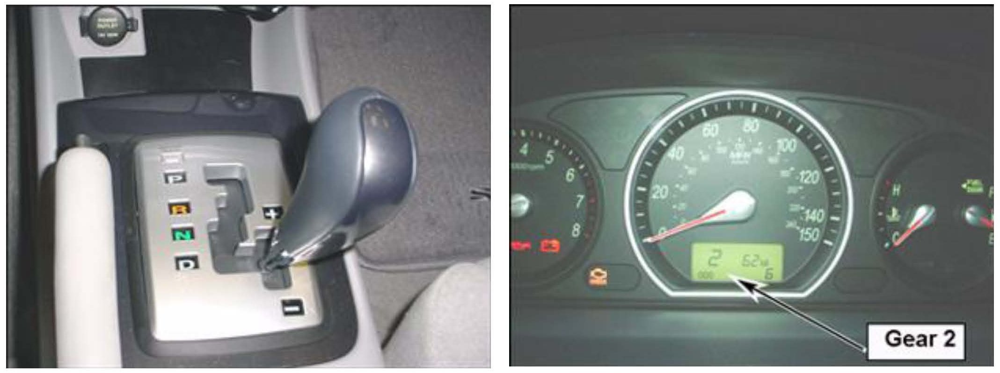
Move the shift lever forward to select "Gear 2 and perform Steps 4~5.
Choose the correct transmission and perform the stall test.
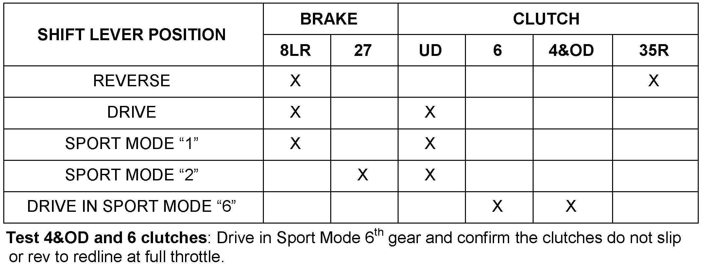
8. 8-SPEED ATM: Perform a stall test in the gears shown.
^ 2012 Genesis Sedan (BH) and Equus (VI)
^ 2013 Genesis Coupe (BK)
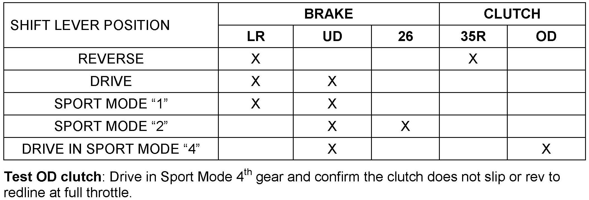
9. 6-SPEED ATM: Perform a stall test in the gears shown.
^ 2010 Tucson (LM) & Santa Fe (CM)
^ 2011 Sonata (YF)/(YF HEV), Elantra (UD/MD) and Azera (TG)
^ 2012 Accent (RB) & Azera (HG)
^ 2013 Veloster Turbo (FS), Elantra Coupe (JK), Elantra GT (GD) & Santa Fe (AN/NC)
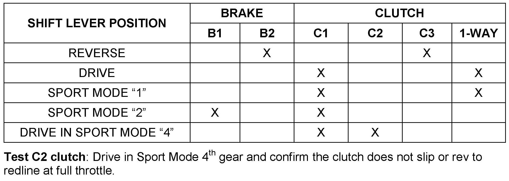
10. 6-SPEED ATM: 2007 Veracruz (EN) Perform a stall test in the gears shown.
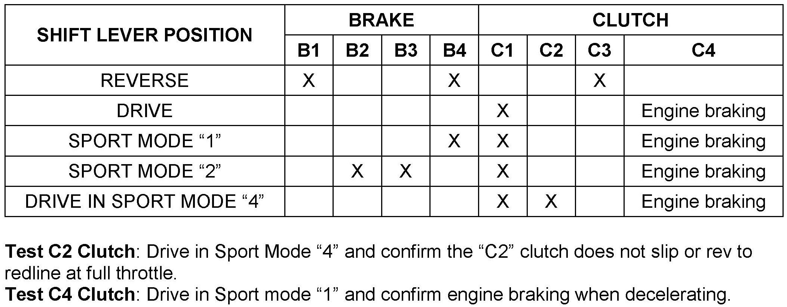
11. 6-SPEED ATM: 2009~11 Genesis Sedan (BH) 3.8L. Perform a stall test in the gears shown.
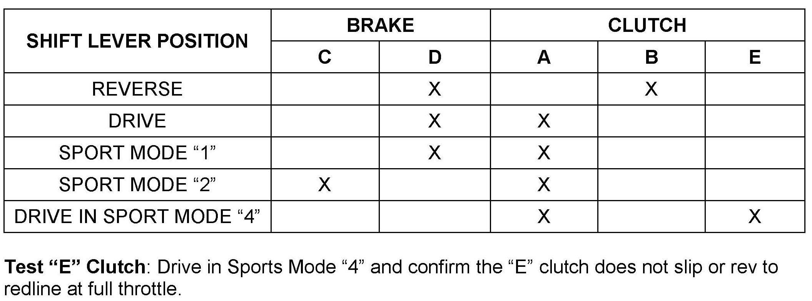
12. 6-SPEED ATM: Perform a stall test in the gears shown.
^ 2009~11 Genesis Sedan (BH) 4.6L,
^ 2010~12 Genesis Coupe (BK) 3.8L
^ 2011 Equus (VI) 4.6L.
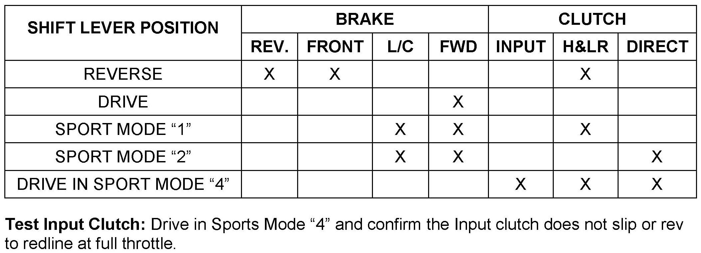
13. 5-SPEED ATM: 2010~12 Genesis Coupe 2.0L. Perform a stall test in the gears shown.
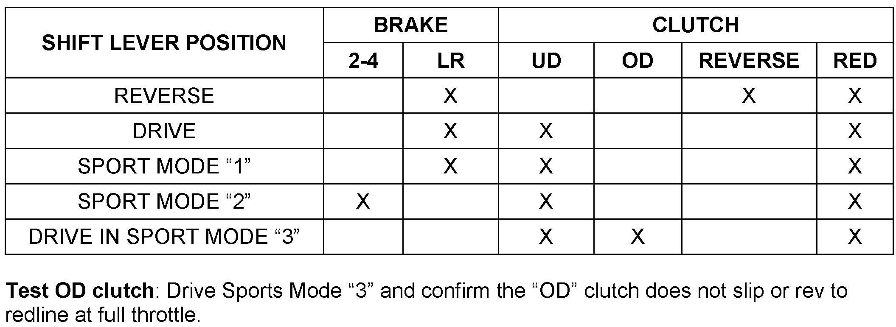
14. 5-SPEED ATM WITH SPORT MODE - Except 2010~12 Genesis Coupe (BK) 2.0L: Perform a stall test in the gears shown.
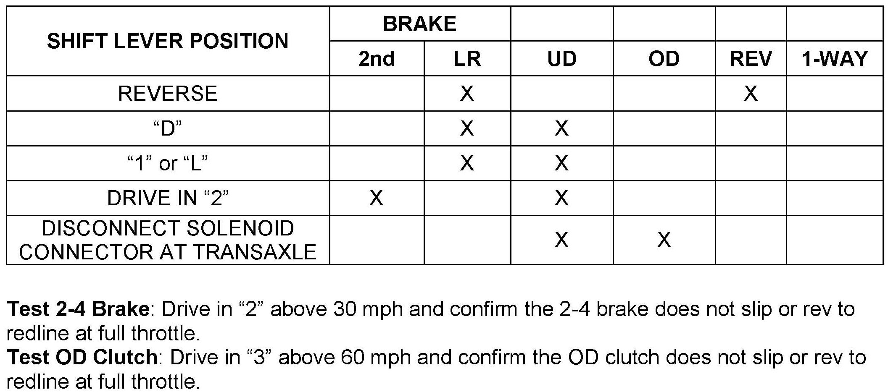
15. 4-SPEED ATM WITH PRND32I SHIFT PATTERN. Perform a stall test in the gears shown.
^ 2001~10 Elantra Sedan 2009~12 Elantra Touring.
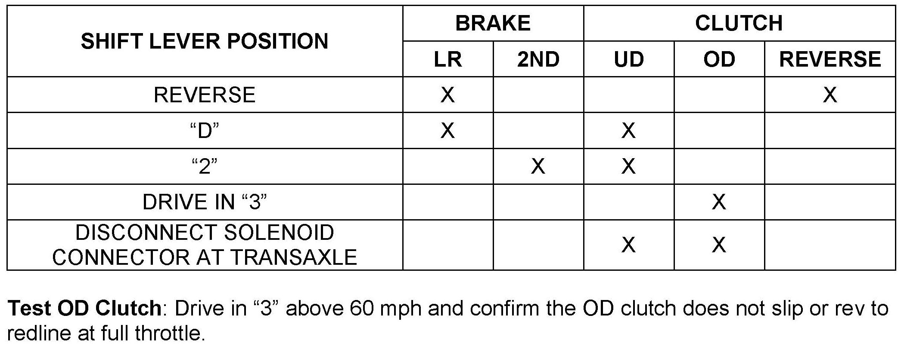
16. 4-SPEED ATM WITH PRND2L SHIFT PATTERN: Perform a stall test in the gears shown.
^ 1999~05 Sonata
^ 1997~01 Tiburon 1992~95 Elantra
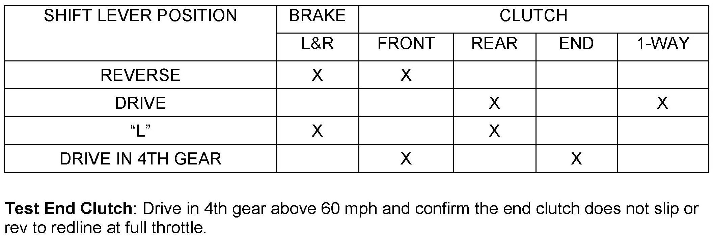
17. 4-SPEED ATM WITH PRDL SHIFT PATTERN: 1995~99 Accent. Perform a stall test in the gears shown.